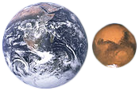
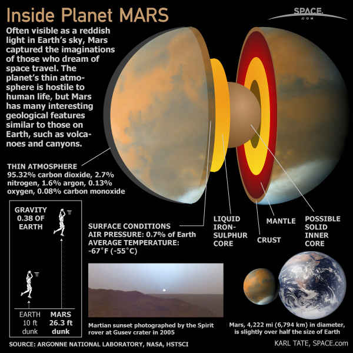

Mars is the fourth planet from the Sun and the second-smallest planet in the Solar System, after Mercury. Named after the Roman god of war, it is often referred to as the "Red Planet" because the iron oxide prevalent on its surface gives it a reddish appearance. Mars is a terrestrial planet with a thin atmosphere, having surface features reminiscent both of the impact craters of the Moon and the valleys, deserts, and polar ice caps of Earth.
The rotational period and seasonal cycles of Mars are likewise similar to those of Earth, as is the tilt that produces the seasons. Mars is the site of Olympus Mons, the largest volcano and second-highest known mountain in the Solar System, and of Valles Marineris, one of the largest canyons in the Solar System. The smooth Borealis basin in the northern hemisphere covers 40% of the planet and may be a giant impact feature. Mars has two moons, Phobos and Deimos, which are small and irregularly shaped. These may be captured asteroids, similar to 5261 Eureka, a Mars trojan.
Until the first successful Mars flyby in 1965 by Mariner 4, many speculated about the presence of liquid water on the planet's surface. This was based on observed periodic variations in light and dark patches, particularly in the polar latitudes, which appeared to be seas and continents; long, dark striations were interpreted by some as irrigation channels for liquid water. These straight line features were later explained as optical illusions, though geological evidence gathered by uncrewed missions suggests that Mars once had large-scale water coverage on its surface at an earlier stage of its existence. In 2005, radar data revealed the presence of large quantities of water ice at the poles and at mid-latitudes. The Mars rover Spirit sampled chemical compounds containing water molecules in March 2007. The Phoenix lander directly sampled water ice in shallow Martian soil on July 31, 2008. On September 28, 2015, NASA announced the presence of briny flowing salt water on the Martian surface.
Physical Characteristics

Mars is approximately half the diameter of Earth, and its surface area is only slightly less than the total area of Earth's dry land. Mars is less dense than Earth, having about 15% of Earth's volume and 11% of Earth's mass, resulting in about 38% of Earth's surface gravity. The red-orange appearance of the Martian surface is caused by iron(III) oxide, or rust. It can look like butterscotch, and other common surface colors include golden, brown, tan, and greenish, depending on the minerals present.
Internal Structure

Like Earth, Mars has differentiated into a dense metallic core overlaid by less dense materials. Current models of its interior imply a core region about 1,794 ± 65 kilometers (1,115 ± 40 mi) in radius, consisting primarily of iron and nickel with about 16–17% sulfur. This iron(II) sulfide core is thought to be twice as rich in lighter elements than Earth's core. The core is surrounded by a silicate mantle that formed many of the tectonic and volcanic features on the planet, but it appears to be dormant. Besides silicon and oxygen, the most abundant elements in the Martian crust are iron, magnesium, aluminum, calcium, and potassium. The average thickness of the planet's crust is about 50 km (31 mi), with a maximum thickness of 125 km (78 mi). Earth's crust, averaging 40 km (25 mi), is only one third as thick as Mars', in ratio to the sizes of the two planets.
Mars is a terrestrial planet that consists of minerals containing silicon and oxygen, metals, and other elements that typically make up rock. The surface of Mars is primarily composed of tholeiitic basalt, although parts are more silica-rich than typical basalt and may be similar to andesitic rocks on Earth or silica glass. Regions of low albedo show concentrations of plagioclase feldspar, with northern low albedo regions displaying higher than normal concentrations of sheet silicates and high-silicon glass. Parts of the southern highlands include detectable amounts of high-calcium pyroxenes. Localized concentrations of hematite and olivine have been found. Much of the surface is deeply covered by finely grained iron(III) oxide dust.